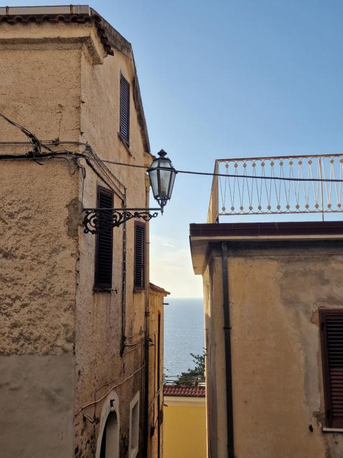
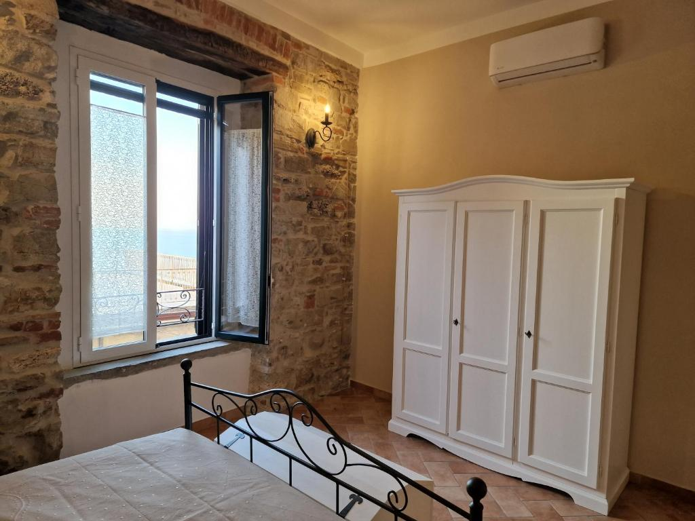
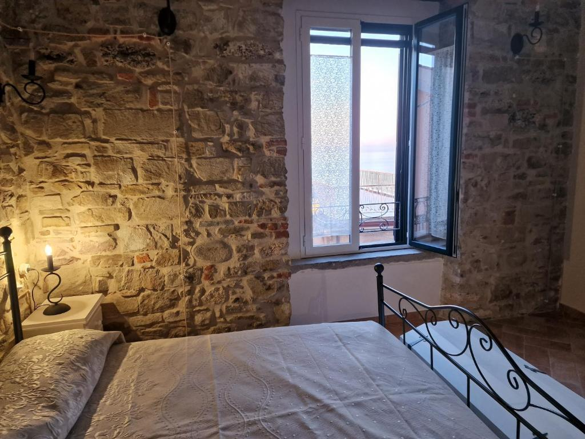
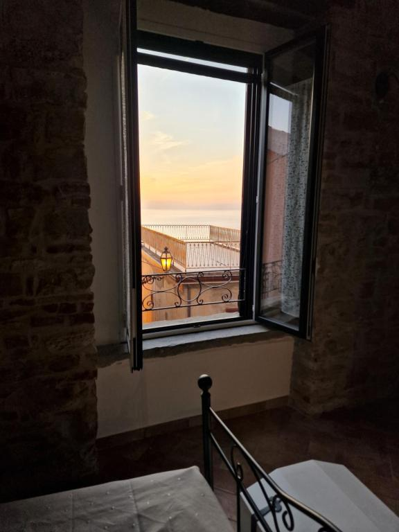
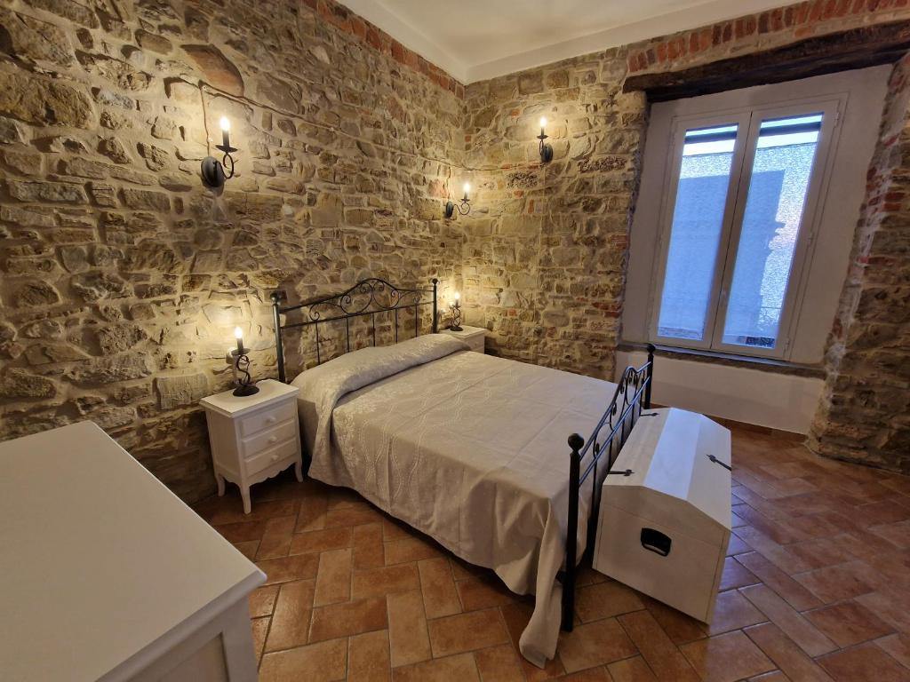
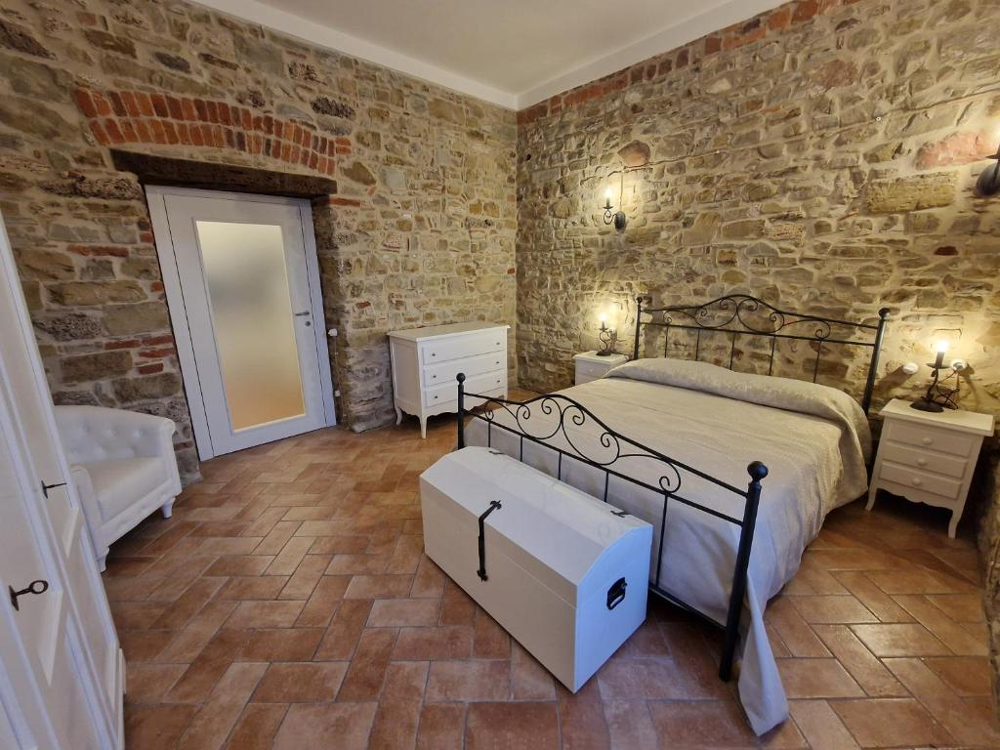
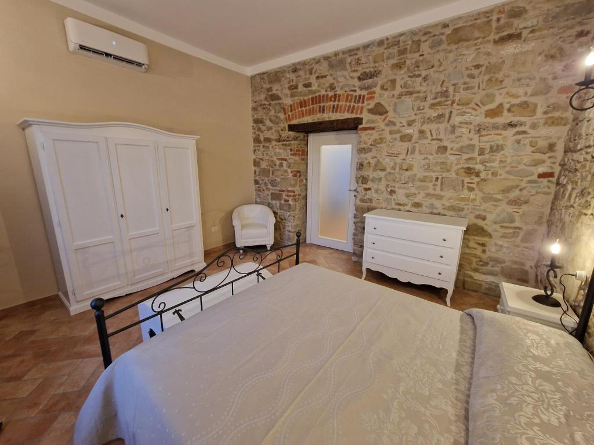
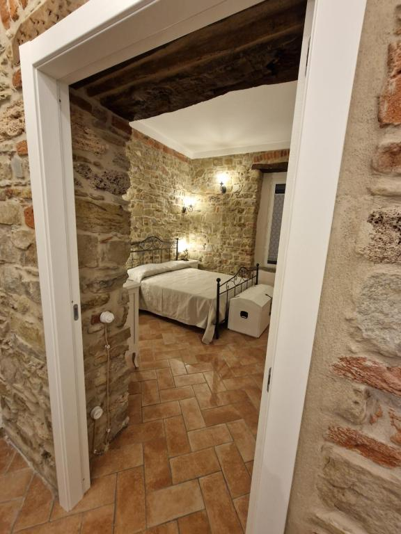
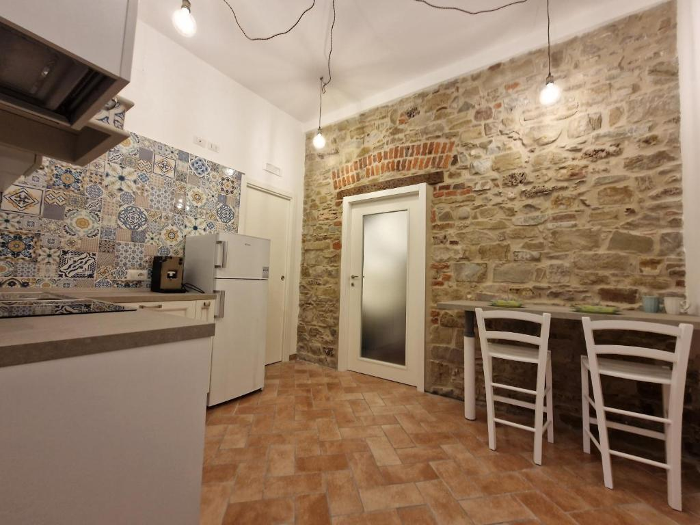
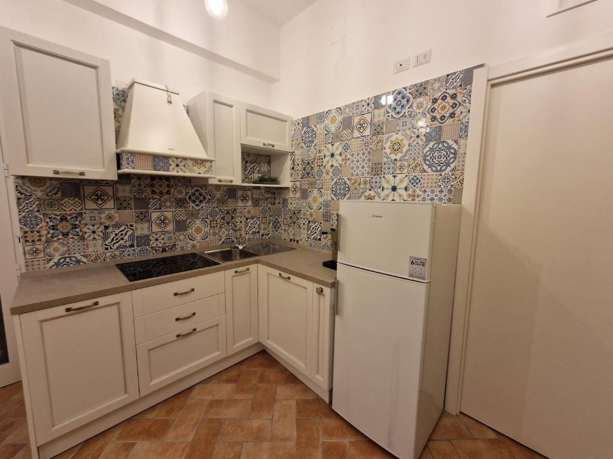

Casa Vacanze – Via del Castello, 7
Situata nel cuore del centro storico di Agropoli, la nostra dimora offre il fascino della pietra antica unito al comfort moderno. Ideale per un soggiorno indimenticabile a pochi passi dal Castello Aragonese e con vista sul mare.










Contatti
📍 Indirizzo: Via del Castello, 7 – Agropoli (SA)
📧 Email: info@dimonaragonese.it
📞 Telefono: +39 333 1234567